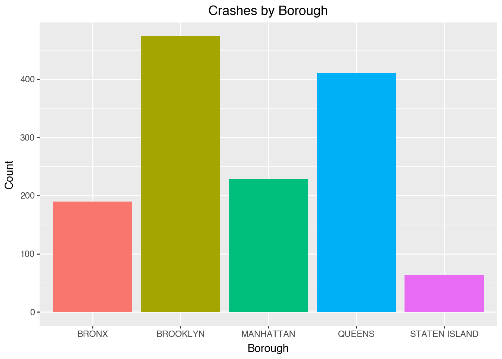
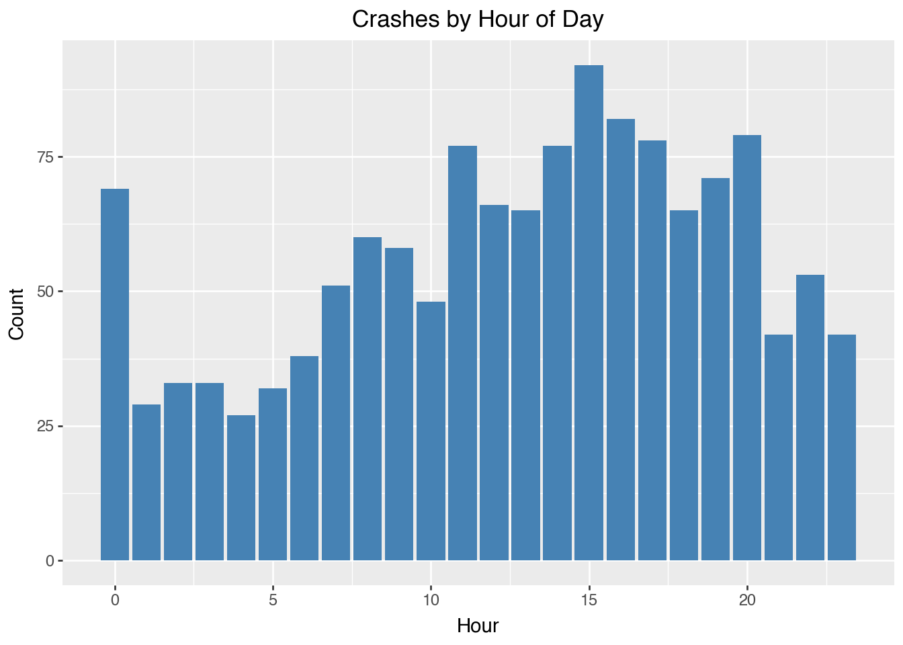

import pandas as pd6 Data Manipulation
6.1 Introduction
Data manipulation is crucial for transforming raw data into a more analyzable format, essential for uncovering patterns and ensuring accurate analysis. This chapter introduces the core techniques for data manipulation in Python, utilizing the Pandas library, a cornerstone for data handling within Python’s data science toolkit.
Python’s ecosystem is rich with libraries that facilitate not just data manipulation but comprehensive data analysis. Pandas, in particular, provides extensive functionality for data manipulation tasks including reading, cleaning, transforming, and summarizing data. Using real-world datasets, we will explore how to leverage Python for practical data manipulation tasks.
By the end of this chapter, you will learn to:
- Import/export data from/to diverse sources.
- Clean and preprocess data efficiently.
- Transform and aggregate data to derive insights.
- Merge and concatenate datasets from various origins.
- Analyze real-world datasets using these techniques.
6.2 Data Manipulation with Pandas
This section was written by Owen Sgro.
6.2.1 Introduction
My name is Owen Sgro and I’m a Statistical Data Science major, minoring in Computer Science. I’ll be talking about Data Manipulation using Pandas. For this presentation I’ll be using the NYC Crash Data we cleaned.
6.2.1.1 What is Pandas?
- Pandas is the primary Python library for data manipulation and analysis
- It provides tools to load, clean, filter, transform, and summarize datasets.
6.2.1.2 Why Use Pandas?
- Intuitive table-like structure (similar to R’s data frames)
- Handles missing data
- Built-in methods for grouping, filtering, merging, and reshaping
- Works seamlessly with libraries like Plotnine, Matplotlib , and NumPy
6.2.2 Getting Started
6.2.2.1 Importing Pandas
- For our examples we will use the cleaned feather of the NYC crash data (courtesy of Wilson Tang)
- Feather files are fast, binary formats for data, perfect for usage with Pandas.
- pip install pandas
6.2.2.2 Reading Data
# Load dataset
df = pd.read_feather("data/nyc_crashes_cleaned.feather")
df.head()| borough | zip_code | latitude | longitude | on_street_name | cross_street_name | off_street_name | number_of_persons_injured | number_of_persons_killed | number_of_pedestrians_injured | ... | collision_id | vehicle_type_code_1 | vehicle_type_code_2 | vehicle_type_code_3 | vehicle_type_code_4 | vehicle_type_code_5 | was_fillable | zip_code_numeric | zip_filled | crash_datetime | |
|---|---|---|---|---|---|---|---|---|---|---|---|---|---|---|---|---|---|---|---|---|---|
| 0 | QUEENS | 11101 | 40.753113 | -73.933701 | 30 ST | 39 AVE | None | 0 | 1 | 0 | ... | 4838875 | Station Wagon/Sport Utility Vehicle | None | None | None | None | False | 11101.0 | False | 2025-08-31 12:49:00 |
| 1 | MANHATTAN | 10022 | 40.760601 | -73.964317 | E 59 ST | 2 AVE | None | 0 | 0 | 0 | ... | 4839110 | Station Wagon/Sport Utility Vehicle | None | None | None | None | False | 10022.0 | False | 2025-08-31 15:30:00 |
| 2 | None | 11040 | 40.734234 | -73.722748 | CROSS ISLAND PARKWAY | HILLSIDE AVENUE | None | 0 | 0 | 0 | ... | 4838966 | Sedan | Sedan | None | None | None | True | 11040.0 | True | 2025-08-31 19:00:00 |
| 3 | BROOKLYN | 11220 | 40.648075 | -74.007034 | None | None | 4415 5 AVE | 2 | 0 | 0 | ... | 4838563 | Sedan | E-Bike | None | None | None | False | 11220.0 | False | 2025-08-31 01:19:00 |
| 4 | MANHATTAN | 10036 | 40.756561 | -73.986107 | W 43 ST | BROADWAY | None | 1 | 0 | 0 | ... | 4838922 | Station Wagon/Sport Utility Vehicle | Bike | None | None | None | False | 10036.0 | False | 2025-08-31 02:41:00 |
5 rows × 30 columns
6.2.3 Exploring Data
- info() –> column types and missing values
df.info()<class 'pandas.core.frame.DataFrame'>
Index: 1381 entries, 0 to 1380
Data columns (total 30 columns):
# Column Non-Null Count Dtype
--- ------ -------------- -----
0 borough 1367 non-null object
1 zip_code 1365 non-null object
2 latitude 1345 non-null float32
3 longitude 1345 non-null float32
4 on_street_name 953 non-null object
5 cross_street_name 839 non-null object
6 off_street_name 428 non-null object
7 number_of_persons_injured 1381 non-null int64
8 number_of_persons_killed 1381 non-null int64
9 number_of_pedestrians_injured 1381 non-null int64
10 number_of_pedestrians_killed 1381 non-null int64
11 number_of_cyclist_injured 1381 non-null int64
12 number_of_cyclist_killed 1381 non-null int64
13 number_of_motorist_injured 1381 non-null int64
14 number_of_motorist_killed 1381 non-null int64
15 contributing_factor_vehicle_1 1372 non-null object
16 contributing_factor_vehicle_2 1059 non-null object
17 contributing_factor_vehicle_3 118 non-null object
18 contributing_factor_vehicle_4 33 non-null object
19 contributing_factor_vehicle_5 12 non-null object
20 collision_id 1381 non-null int64
21 vehicle_type_code_1 1364 non-null object
22 vehicle_type_code_2 945 non-null object
23 vehicle_type_code_3 112 non-null object
24 vehicle_type_code_4 30 non-null object
25 vehicle_type_code_5 12 non-null object
26 was_fillable 1381 non-null bool
27 zip_code_numeric 1365 non-null float64
28 zip_filled 1381 non-null bool
29 crash_datetime 1381 non-null datetime64[ns]
dtypes: bool(2), datetime64[ns](1), float32(2), float64(1), int64(9), object(15)
memory usage: 304.8+ KB- describe() –> summary statistics for numeric columns
df.describe()| latitude | longitude | number_of_persons_injured | number_of_persons_killed | number_of_pedestrians_injured | number_of_pedestrians_killed | number_of_cyclist_injured | number_of_cyclist_killed | number_of_motorist_injured | number_of_motorist_killed | collision_id | zip_code_numeric | crash_datetime | |
|---|---|---|---|---|---|---|---|---|---|---|---|---|---|
| count | 1345.000000 | 1345.000000 | 1381.000000 | 1381.000000 | 1381.000000 | 1381.000000 | 1381.000000 | 1381.0 | 1381.000000 | 1381.000000 | 1.381000e+03 | 1365.000000 | 1381 |
| mean | 40.715656 | -73.914635 | 0.663287 | 0.004345 | 0.099203 | 0.000724 | 0.070963 | 0.0 | 0.473570 | 0.003621 | 4.839709e+06 | 10919.303297 | 2025-09-03 08:55:21.853729024 |
| min | 40.507755 | -74.243088 | 0.000000 | 0.000000 | 0.000000 | 0.000000 | 0.000000 | 0.0 | 0.000000 | 0.000000 | 4.838563e+06 | 10001.000000 | 2025-08-31 00:00:00 |
| 25% | 40.657665 | -73.969521 | 0.000000 | 0.000000 | 0.000000 | 0.000000 | 0.000000 | 0.0 | 0.000000 | 0.000000 | 4.839274e+06 | 10457.000000 | 2025-09-01 17:05:00 |
| 50% | 40.708607 | -73.921539 | 0.000000 | 0.000000 | 0.000000 | 0.000000 | 0.000000 | 0.0 | 0.000000 | 0.000000 | 4.839714e+06 | 11212.000000 | 2025-09-03 08:00:00 |
| 75% | 40.765766 | -73.860085 | 1.000000 | 0.000000 | 0.000000 | 0.000000 | 0.000000 | 0.0 | 1.000000 | 0.000000 | 4.840132e+06 | 11354.000000 | 2025-09-05 00:23:00 |
| max | 40.897251 | -73.711029 | 10.000000 | 2.000000 | 4.000000 | 1.000000 | 2.000000 | 0.0 | 10.000000 | 2.000000 | 4.840663e+06 | 11694.000000 | 2025-09-06 23:33:00 |
| std | 0.080481 | 0.087819 | 0.935774 | 0.076015 | 0.324606 | 0.026909 | 0.265185 | 0.0 | 0.926379 | 0.071129 | 5.286559e+02 | 524.076952 | NaN |
6.2.4 Selecting and Filtering Data
We can select the rows that we want included in the data.
df["borough"].head()
df[["borough", "crash_datetime", "number_of_persons_injured"]].head()| borough | crash_datetime | number_of_persons_injured | |
|---|---|---|---|
| 0 | QUEENS | 2025-08-31 12:49:00 | 0 |
| 1 | MANHATTAN | 2025-08-31 15:30:00 | 0 |
| 2 | None | 2025-08-31 19:00:00 | 0 |
| 3 | BROOKLYN | 2025-08-31 01:19:00 | 2 |
| 4 | MANHATTAN | 2025-08-31 02:41:00 | 1 |
In this next text block we filter the data by number_of_persons_injured.
injured = df[df["number_of_persons_injured"] > 0]
print(injured.head(5)) borough zip_code latitude longitude on_street_name cross_street_name \
3 BROOKLYN 11220 40.648075 -74.007034 None None
4 MANHATTAN 10036 40.756561 -73.986107 W 43 ST BROADWAY
5 BRONX 10466 40.887672 -73.847046 LACONIA AVE GRENADA PL
9 QUEENS 11004 40.736752 -73.711029 HILLSIDE AVE 257 ST
10 MANHATTAN 10002 40.714314 -73.987167 E BROADWAY CLINTON ST
off_street_name number_of_persons_injured number_of_persons_killed \
3 4415 5 AVE 2 0
4 None 1 0
5 None 1 0
9 None 1 0
10 None 1 0
number_of_pedestrians_injured ... collision_id \
3 0 ... 4838563
4 0 ... 4838922
5 1 ... 4839184
9 0 ... 4838641
10 1 ... 4838841
vehicle_type_code_1 vehicle_type_code_2 \
3 Sedan E-Bike
4 Station Wagon/Sport Utility Vehicle Bike
5 None None
9 Station Wagon/Sport Utility Vehicle Sedan
10 Sedan None
vehicle_type_code_3 vehicle_type_code_4 vehicle_type_code_5 was_fillable \
3 None None None False
4 None None None False
5 None None None False
9 None None None False
10 None None None False
zip_code_numeric zip_filled crash_datetime
3 11220.0 False 2025-08-31 01:19:00
4 10036.0 False 2025-08-31 02:41:00
5 10466.0 False 2025-08-31 19:42:00
9 11004.0 False 2025-08-31 10:25:00
10 10002.0 False 2025-08-31 17:53:00
[5 rows x 30 columns]6.2.5 Using Boolean and .loc
.locis used to access groups of rows and columns by labels or Boolean conditions.
# Select first 5 rows and specific columns
df.loc[0:5, ["borough", "number_of_persons_injured"]]| borough | number_of_persons_injured | |
|---|---|---|
| 0 | QUEENS | 0 |
| 1 | MANHATTAN | 0 |
| 2 | None | 0 |
| 3 | BROOKLYN | 2 |
| 4 | MANHATTAN | 1 |
| 5 | BRONX | 1 |
6.2.6 DataFrame, Series, and Selecting Columns
DataFrame
- 2D labeled data structure
- Like a table in Excel
- Each column is a Series
- df.head() is how you view the first few rows
Series
- One-dimensional labeled array
- Can hold any data type: integers, floats, strings, etc.
# Selecting a Series
df["borough"].head()
# Accessing Series Properties
df["borough"].dtype # Data type
df["borough"].nunique() # Number of unique values
df["borough"].value_counts().head() # Frequency of top categoriesborough
BROOKLYN 474
QUEENS 410
MANHATTAN 229
BRONX 190
STATEN ISLAND 64
Name: count, dtype: int64Selecting Columns
- Selecting one column returns a Series, selecting multiple returns a DataFrame
df["borough"].head()
df[["borough", "crash_datetime", "number_of_persons_injured"]].head()| borough | crash_datetime | number_of_persons_injured | |
|---|---|---|---|
| 0 | QUEENS | 2025-08-31 12:49:00 | 0 |
| 1 | MANHATTAN | 2025-08-31 15:30:00 | 0 |
| 2 | None | 2025-08-31 19:00:00 | 0 |
| 3 | BROOKLYN | 2025-08-31 01:19:00 | 2 |
| 4 | MANHATTAN | 2025-08-31 02:41:00 | 1 |
6.2.7 Transforming Data
Here we extract crash hour from datetime, then create a severity label using a custom rule.
# Extract crash hour from datetime
df["hour"] = df["crash_datetime"].dt.hour
# Create severity label using a custom rule
df["severity"] = df["number_of_persons_injured"].apply(
lambda x: "Severe" if x > 2 else "Minor"
)
df[["borough", "hour", "severity"]].head()| borough | hour | severity | |
|---|---|---|---|
| 0 | QUEENS | 12 | Minor |
| 1 | MANHATTAN | 15 | Minor |
| 2 | None | 19 | Minor |
| 3 | BROOKLYN | 1 | Minor |
| 4 | MANHATTAN | 2 | Minor |
- In Pandas you can:
- convert text to uppercase
- create a binary flag column
- rename columns for consistency
# Convert text to uppercase
df["borough"] = df["borough"].str.upper()
# Create a binary flag column
df["injury_flag"] = (df["number_of_persons_injured"] > 0).astype(int)
# Rename columns for consistency
df = df.rename(columns={"number_of_persons_injured": "persons_injured"})
print(df[["borough", "injury_flag"]].head(5)) borough injury_flag
0 QUEENS 0
1 MANHATTAN 0
2 None 0
3 BROOKLYN 1
4 MANHATTAN 16.2.8 Dealing with Missing Data
- Pandas has flexible options for dropping, filling, or interpolating missing data.
Here we can check the missing values and drop missing entries.
# Check missing values per column
df.isna().sum()
# Drop missing borough entries
df = df.dropna(subset=["borough"])- Fill with a default value
- Forward or backward fill (useful for time-series)
- Replace missing numberic data with mean or median
- Check proportion of missingness
# Fill missing categorical values
df["borough"] = df["borough"].fillna("Unknown")
# Forward fill numberic columns
df["persons_injured"] = df["persons_injured"].ffill()
# Fill missing 'hour' with mean
df["hour"].fillna(df["hour"].mean(), inplace=True)
# Percentage of missing values
df.isna().mean() * 100/var/folders/cq/5ysgnwfn7c3g0h46xyzvpj800000gn/T/ipykernel_8921/3700694978.py:8: FutureWarning:
A value is trying to be set on a copy of a DataFrame or Series through chained assignment using an inplace method.
The behavior will change in pandas 3.0. This inplace method will never work because the intermediate object on which we are setting values always behaves as a copy.
For example, when doing 'df[col].method(value, inplace=True)', try using 'df.method({col: value}, inplace=True)' or df[col] = df[col].method(value) instead, to perform the operation inplace on the original object.
borough 0.000000
zip_code 0.365764
latitude 1.828822
longitude 1.828822
on_street_name 31.236284
cross_street_name 39.209949
off_street_name 68.763716
persons_injured 0.000000
number_of_persons_killed 0.000000
number_of_pedestrians_injured 0.000000
number_of_pedestrians_killed 0.000000
number_of_cyclist_injured 0.000000
number_of_cyclist_killed 0.000000
number_of_motorist_injured 0.000000
number_of_motorist_killed 0.000000
contributing_factor_vehicle_1 0.658376
contributing_factor_vehicle_2 23.335772
contributing_factor_vehicle_3 91.587418
contributing_factor_vehicle_4 97.732260
contributing_factor_vehicle_5 99.122165
collision_id 0.000000
vehicle_type_code_1 1.243599
vehicle_type_code_2 31.602048
vehicle_type_code_3 91.953182
vehicle_type_code_4 97.951719
vehicle_type_code_5 99.122165
was_fillable 0.000000
zip_code_numeric 0.365764
zip_filled 0.000000
crash_datetime 0.000000
hour 0.000000
severity 0.000000
injury_flag 0.000000
dtype: float646.2.9 Summarizing Data
- We can compute the average number of injuries per crash by borough:
# Average injuries per crash by borough
df.groupby("borough")["persons_injured"].mean().sort_values(ascending=False)borough
BRONX 0.800000
BROOKLYN 0.664557
QUEENS 0.634146
MANHATTAN 0.620087
STATEN ISLAND 0.562500
Name: persons_injured, dtype: float64- Groupby can also perform multiple summary statistics at once
df.groupby("borough")["persons_injured"].agg(["mean", "max", "count"])| mean | max | count | |
|---|---|---|---|
| borough | |||
| BRONX | 0.800000 | 6 | 190 |
| BROOKLYN | 0.664557 | 10 | 474 |
| MANHATTAN | 0.620087 | 7 | 229 |
| QUEENS | 0.634146 | 8 | 410 |
| STATEN ISLAND | 0.562500 | 3 | 64 |
- We have two ways to count crashes:
df["borough"].value_counts()
# OR equivalently:
df.groupby("borough").size().reset_index(name="crash_count")| borough | crash_count | |
|---|---|---|
| 0 | BRONX | 190 |
| 1 | BROOKLYN | 474 |
| 2 | MANHATTAN | 229 |
| 3 | QUEENS | 410 |
| 4 | STATEN ISLAND | 64 |
- Pivot tables are great for reshaping summaries
pivot = pd.pivot_table(
df,
values="persons_injured",
index="borough",
columns="hour",
aggfunc="mean"
)
# Round for readability
pivot_rounded = pivot.round(2)
# Slice for hours 1 to 5
pivot_rounded_subset = pivot_rounded.loc[:, 1:5]- We can output a pivot table of, average injuries per hour by Borough (hours 1-5)
| hour | 1 | 2 | 3 | 4 | 5 |
|---|---|---|---|---|---|
| borough | |||||
| BRONX | 0.67 | 1.00 | 0.88 | 2.00 | 0.67 |
| BROOKLYN | 0.62 | 0.44 | 0.33 | 0.73 | 0.36 |
| MANHATTAN | 0.33 | 0.67 | 1.80 | 0.33 | 0.55 |
| QUEENS | 0.43 | 0.22 | 0.55 | 0.25 | 0.83 |
| STATEN ISLAND | NaN | NaN | NaN | NaN | 0.00 |
6.2.10 Combining and Visualizing Data
We can merge our borough data with the populatio data of those boroughs.
borough_pop = pd.DataFrame({
"borough": ["Bronx", "Brooklyn", "Manhattan", "Queens", "Staten Island"],
"population": [1472654, 2559903, 1628706, 2253858, 487155]
})
merged = pd.merge(df, borough_pop, on="borough", how="inner")- Real-world data often needs to be restructured for analysis or visualization
- Pandas provides powerful tools to switch between wide and long formats
Here we can convert our data from wide to long format.
# Convert from wide to long format
long_df = pd.melt(
df,
id_vars=["borough", "hour"],
value_vars=["persons_injured"],
var_name="metric",
value_name="value"
)
long_df.head()
# Export to CSV
import os
os.makedirs("output", exist_ok=True)
long_df.to_csv("output/nyc_crash_long.csv", index=False)6.2.11 Visualizing with Plotnine
We can visualize data in Pandas with plotnine. - We can see that Brooklyn and Queens typically have higher crash counts - Reflects both population and traffic density
from plotnine import *
(ggplot(df, aes(x="borough", fill="borough"))
+ geom_bar(show_legend=False)
+ labs(title="Crashes by Borough", x="Borough", y="Count"))
Here we calculate the crash frequency per hour. - Crash frequency tends to increase during commute hours (rush hour)
(ggplot(df, aes(x="hour"))
+ geom_bar(fill="steelblue")
+ labs(title="Crashes by Hour of Day", x="Hour", y="Count"))
6.2.12 Wrapping Up
- Pandas simplifies all stages of data analysis.
- Exploration (head(), info(), describe())
- Cleaning and Transformation (apply(), dropna())
- Summarization (groupby(), pivot_table())
- Combination and Reshaping (merge(), melt())
- Integrates seamlessly with NumPy and Plotnine
- Enables reproducible, efficient, and scalable data workflows
- Mastering Pandas provides a strong foundation for machine learning, visualization, and statistical modeling
6.2.13 Resources
6.3 Example: NYC Crash Data
Consider a subset of the NYC Crash Data, which contains all NYC motor vehicle collisions data with documentation from NYC Open Data. We downloaded the crash data for the week of August 31, 2025, on September 11, 2025, in CSC format.
import numpy as np
import pandas as pd
# Load the dataset
file_path = 'data/nyc_crashes_lbdwk_2025.csv'
df = pd.read_csv(file_path,
dtype={'LATITUDE': np.float32,
'LONGITUDE': np.float32,
'ZIP CODE': str})
# Replace column names: convert to lowercase and replace spaces with underscores
df.columns = df.columns.str.lower().str.replace(' ', '_')
# Check for missing values
df.isnull().sum()crash_date 0
crash_time 0
borough 284
zip_code 284
latitude 12
longitude 12
location 12
on_street_name 456
cross_street_name 587
off_street_name 1031
number_of_persons_injured 0
number_of_persons_killed 0
number_of_pedestrians_injured 0
number_of_pedestrians_killed 0
number_of_cyclist_injured 0
number_of_cyclist_killed 0
number_of_motorist_injured 0
number_of_motorist_killed 0
contributing_factor_vehicle_1 9
contributing_factor_vehicle_2 355
contributing_factor_vehicle_3 1358
contributing_factor_vehicle_4 1447
contributing_factor_vehicle_5 1474
collision_id 0
vehicle_type_code_1 17
vehicle_type_code_2 475
vehicle_type_code_3 1363
vehicle_type_code_4 1452
vehicle_type_code_5 1474
dtype: int64Take a peek at the first five rows:
df.head()| crash_date | crash_time | borough | zip_code | latitude | longitude | location | on_street_name | cross_street_name | off_street_name | ... | contributing_factor_vehicle_2 | contributing_factor_vehicle_3 | contributing_factor_vehicle_4 | contributing_factor_vehicle_5 | collision_id | vehicle_type_code_1 | vehicle_type_code_2 | vehicle_type_code_3 | vehicle_type_code_4 | vehicle_type_code_5 | |
|---|---|---|---|---|---|---|---|---|---|---|---|---|---|---|---|---|---|---|---|---|---|
| 0 | 08/31/2025 | 12:49 | QUEENS | 11101 | 40.753113 | -73.933701 | (40.753113, -73.9337) | 30 ST | 39 AVE | NaN | ... | NaN | NaN | NaN | NaN | 4838875 | Station Wagon/Sport Utility Vehicle | NaN | NaN | NaN | NaN |
| 1 | 08/31/2025 | 15:30 | MANHATTAN | 10022 | 40.760601 | -73.964317 | (40.7606, -73.96432) | E 59 ST | 2 AVE | NaN | ... | NaN | NaN | NaN | NaN | 4839110 | Station Wagon/Sport Utility Vehicle | NaN | NaN | NaN | NaN |
| 2 | 08/31/2025 | 19:00 | NaN | NaN | 40.734234 | -73.722748 | (40.734234, -73.72275) | CROSS ISLAND PARKWAY | HILLSIDE AVENUE | NaN | ... | Unspecified | Unspecified | NaN | NaN | 4838966 | Sedan | Sedan | NaN | NaN | NaN |
| 3 | 08/31/2025 | 1:19 | BROOKLYN | 11220 | 40.648075 | -74.007034 | (40.648075, -74.007034) | NaN | NaN | 4415 5 AVE | ... | Unspecified | NaN | NaN | NaN | 4838563 | Sedan | E-Bike | NaN | NaN | NaN |
| 4 | 08/31/2025 | 2:41 | MANHATTAN | 10036 | 40.756561 | -73.986107 | (40.75656, -73.98611) | W 43 ST | BROADWAY | NaN | ... | Unspecified | NaN | NaN | NaN | 4838922 | Station Wagon/Sport Utility Vehicle | Bike | NaN | NaN | NaN |
5 rows × 29 columns
A quick summary of the data types of the columns:
df.info()<class 'pandas.core.frame.DataFrame'>
RangeIndex: 1487 entries, 0 to 1486
Data columns (total 29 columns):
# Column Non-Null Count Dtype
--- ------ -------------- -----
0 crash_date 1487 non-null object
1 crash_time 1487 non-null object
2 borough 1203 non-null object
3 zip_code 1203 non-null object
4 latitude 1475 non-null float32
5 longitude 1475 non-null float32
6 location 1475 non-null object
7 on_street_name 1031 non-null object
8 cross_street_name 900 non-null object
9 off_street_name 456 non-null object
10 number_of_persons_injured 1487 non-null int64
11 number_of_persons_killed 1487 non-null int64
12 number_of_pedestrians_injured 1487 non-null int64
13 number_of_pedestrians_killed 1487 non-null int64
14 number_of_cyclist_injured 1487 non-null int64
15 number_of_cyclist_killed 1487 non-null int64
16 number_of_motorist_injured 1487 non-null int64
17 number_of_motorist_killed 1487 non-null int64
18 contributing_factor_vehicle_1 1478 non-null object
19 contributing_factor_vehicle_2 1132 non-null object
20 contributing_factor_vehicle_3 129 non-null object
21 contributing_factor_vehicle_4 40 non-null object
22 contributing_factor_vehicle_5 13 non-null object
23 collision_id 1487 non-null int64
24 vehicle_type_code_1 1470 non-null object
25 vehicle_type_code_2 1012 non-null object
26 vehicle_type_code_3 124 non-null object
27 vehicle_type_code_4 35 non-null object
28 vehicle_type_code_5 13 non-null object
dtypes: float32(2), int64(9), object(18)
memory usage: 325.4+ KBNow we can do some cleaning after a quick browse.
# Replace invalid coordinates (latitude=0, longitude=0 or NaN) with NaN
df.loc[(df['latitude'] == 0) & (df['longitude'] == 0),
['latitude', 'longitude']] = pd.NA
df['latitude'] = df['latitude'].replace(0, pd.NA)
df['longitude'] = df['longitude'].replace(0, pd.NA)
# Drop the redundant `latitute` and `longitude` columns
df = df.drop(columns=['location'])
# Converting 'crash_date' and 'crash_time' columns into a single datetime column
df['crash_datetime'] = pd.to_datetime(df['crash_date'] + ' '
+ df['crash_time'], format='%m/%d/%Y %H:%M', errors='coerce')
# Drop the original 'crash_date' and 'crash_time' columns
df = df.drop(columns=['crash_date', 'crash_time'])Let’s get some basic frequency tables of borough and zip_code, whose values could be used to check their validity against the legitmate values.
# Frequency table for 'borough' without filling missing values
borough_freq = df['borough'].value_counts(dropna=False).reset_index()
borough_freq.columns = ['borough', 'count']
# Frequency table for 'zip_code' without filling missing values
zip_code_freq = df['zip_code'].value_counts(dropna=False).reset_index()
zip_code_freq.columns = ['zip_code', 'count']
zip_code_freq| zip_code | count | |
|---|---|---|
| 0 | NaN | 284 |
| 1 | 11207 | 33 |
| 2 | 11203 | 29 |
| 3 | 11212 | 23 |
| 4 | 11233 | 21 |
| ... | ... | ... |
| 159 | 11379 | 1 |
| 160 | 10007 | 1 |
| 161 | 10308 | 1 |
| 162 | 11362 | 1 |
| 163 | 11694 | 1 |
164 rows × 2 columns
A comprehensive list of ZIP codes by borough can be obtained, for example, from the New York City Department of Health’s UHF Codes. We can use this list to check the validity of the zip codes in the data.
# List of valid NYC ZIP codes compiled from UHF codes
# Define all_valid_zips based on the earlier extracted ZIP codes
all_valid_zips = {
10463, 10471, 10466, 10469, 10470, 10475, 10458, 10467, 10468,
10461, 10462, 10464, 10465, 10472, 10473, 10453, 10457, 10460,
10451, 10452, 10456, 10454, 10455, 10459, 10474, 11211, 11222,
11201, 11205, 11215, 11217, 11231, 11213, 11212, 11216, 11233,
11238, 11207, 11208, 11220, 11232, 11204, 11218, 11219, 11230,
11203, 11210, 11225, 11226, 11234, 11236, 11239, 11209, 11214,
11228, 11223, 11224, 11229, 11235, 11206, 11221, 11237, 10031,
10032, 10033, 10034, 10040, 10026, 10027, 10030, 10037, 10039,
10029, 10035, 10023, 10024, 10025, 10021, 10028, 10044, 10128,
10001, 10011, 10018, 10019, 10020, 10036, 10010, 10016, 10017,
10022, 10012, 10013, 10014, 10002, 10003, 10009, 10004, 10005,
10006, 10007, 10038, 10280, 11101, 11102, 11103, 11104, 11105,
11106, 11368, 11369, 11370, 11372, 11373, 11377, 11378, 11354,
11355, 11356, 11357, 11358, 11359, 11360, 11361, 11362, 11363,
11364, 11374, 11375, 11379, 11385, 11365, 11366, 11367, 11414,
11415, 11416, 11417, 11418, 11419, 11420, 11421, 11412, 11423,
11432, 11433, 11434, 11435, 11436, 11004, 11005, 11411, 11413,
11422, 11426, 11427, 11428, 11429, 11691, 11692, 11693, 11694,
11695, 11697, 10302, 10303, 10310, 10301, 10304, 10305, 10314,
10306, 10307, 10308, 10309, 10312
}
# Convert set to list of strings
all_valid_zips = list(map(str, all_valid_zips))
# Identify invalid ZIP codes (including NaN)
invalid_zips = df[
df['zip_code'].isna() | ~df['zip_code'].isin(all_valid_zips)
]['zip_code']
# Calculate frequency of invalid ZIP codes
invalid_zip_freq = invalid_zips.value_counts(dropna=False).reset_index()
invalid_zip_freq.columns = ['zip_code', 'frequency']
invalid_zip_freq| zip_code | frequency | |
|---|---|---|
| 0 | NaN | 284 |
| 1 | 10000 | 4 |
| 2 | 10065 | 3 |
| 3 | 10075 | 2 |
| 4 | 11430 | 1 |
As it turns out, the collection of valid NYC zip codes differ from different sources. From United States Zip Codes, 10065 appears to be a valid NYC zip code. Under this circumstance, it might be safer to not remove any zip code from the data.
To be safe, let’s concatenate valid and invalid zips.
# Convert invalid ZIP codes to a set of strings
invalid_zips_set = set(invalid_zip_freq['zip_code'].dropna().astype(str))
# Convert all_valid_zips to a set of strings (if not already)
valid_zips_set = set(map(str, all_valid_zips))
# Merge both sets
merged_zips = invalid_zips_set | valid_zips_set # Union of both setsAre missing in zip code and borough always co-occur?
# Check if missing values in 'zip_code' and 'borough' always co-occur
# Count rows where both are missing
missing_cooccur = df[['zip_code', 'borough']].isnull().all(axis=1).sum()
# Count total missing in 'zip_code' and 'borough', respectively
total_missing_zip_code = df['zip_code'].isnull().sum()
total_missing_borough = df['borough'].isnull().sum()
# If missing in both columns always co-occur, the number of missing
# co-occurrences should be equal to the total missing in either column
np.array([missing_cooccur, total_missing_zip_code, total_missing_borough])array([284, 284, 284])Are there cases where zip_code and borough are missing but the geo codes are not missing? If so, fill in zip_code and borough using the geo codes by reverse geocoding.
First make sure geopy is installed.
pip install geopyNow we use module Nominatim in package geopy to reverse geocode.
from geopy.geocoders import Nominatim
import time
# Initialize the geocoder; the `user_agent` is your identifier
# when using the service. Be mindful not to crash the server
# by unlimited number of queries, especially invalid code.
geolocator = Nominatim(user_agent="jyGeopyTry")We write a function to do the reverse geocoding given lattitude and longitude.
# Function to fill missing zip_code
def get_zip_code(latitude, longitude):
try:
location = geolocator.reverse((latitude, longitude), timeout=10)
if location:
address = location.raw['address']
zip_code = address.get('postcode', None)
return zip_code
else:
return None
except Exception as e:
print(f"Error: {e} for coordinates {latitude}, {longitude}")
return None
finally:
time.sleep(1) # Delay to avoid overwhelming the serviceLet’s try it out:
# Example usage
latitude = 40.730610
longitude = -73.935242
get_zip_code(latitude, longitude)'11101'The function get_zip_code can then be applied to rows where zip code is missing but geocodes are not to fill the missing zip code.
Once zip code is known, figuring out burough is simple because valid zip codes from each borough are known.
6.4 Accessing Census Data
The U.S. Census Bureau provides extensive demographic, economic, and social data through multiple surveys, including the decennial Census, the American Community Survey (ACS), and the Economic Census. These datasets offer valuable insights into population trends, economic conditions, and community characteristics at multiple geographic levels.
There are multiple ways to access Census data. For example:
- Census API: The Census API allows programmatic access to various datasets. It supports queries for different geographic levels and time periods.
- data.census.gov: The official web interface for searching and downloading Census data.
- IPUMS USA: Provides harmonized microdata for longitudinal research. Available at IPUMS USA.
- NHGIS: Offers historical Census data with geographic information. Visit NHGIS.
In addition, Python tools simplify API access and data retrieval.
6.4.1 Python Tools for Accessing Census Data
Several Python libraries facilitate Census data retrieval:
census: A high-level interface to the Census API, supporting ACS and decennial Census queries. Seecensuson PyPI.censusdis: Provides richer functionality: automatic discovery of variables, geographies, and datasets. Helpful if you don’t want to manually look up variable codes. Seecensusdison PyPI.us: Often used alongside census libraries to handle U.S. state and territory information (e.g., FIPS codes). Seeuson PyPI.
6.4.2 Zip-Code Level for NYC Crash Data
Now that we have NYC crash data, we might want to analyze patterns at the zip-code level to understand whether certain demographic or economic factors correlate with traffic incidents. While the crash dataset provides details about individual accidents, such as location, time, and severity, it does not contain contextual information about the neighborhoods where these crashes occur.
To perform meaningful zip-code-level analysis, we need additional data sources that provide relevant demographic, economic, and geographic variables. For example, understanding whether high-income areas experience fewer accidents, or whether population density influences crash frequency, requires integrating Census data. Key variables such as population size, median household income, employment rate, and population density can provide valuable context for interpreting crash trends across different zip codes.
Since the Census Bureau provides detailed estimates for these variables at the zip-code level, we can use the Census API or other tools to retrieve relevant data and merge it with the NYC crash dataset. To access the Census API, you need an API key, which is free and easy to obtain. Visit the Census API Request page and submit your email address to receive a key. Once you have the key, you must include it in your API requests to access Census data. The following demonstration assumes that you have registered, obtained your API key, and saved it in a file called censusAPIkey.txt.
# Import modules
import matplotlib.pyplot as plt
import pandas as pd
import geopandas as gpd
from census import Census
from us import states
import os
import io
api_key = open("censusAPIkey.txt").read().strip()
c = Census(api_key)Suppose that we want to get some basic info from ACS data of the year of 2024 for all the NYC zip codes. The variable names can be found in the ACS variable documentation.
ACS_YEAR = 2024
ACS_DATASET = "acs/acs5"
# Important ACS variables (including land area for density calculation)
ACS_VARIABLES = {
"B01003_001E": "Total Population",
"B19013_001E": "Median Household Income",
"B02001_002E": "White Population",
"B02001_003E": "Black Population",
"B02001_005E": "Asian Population",
"B15003_022E": "Bachelor’s Degree Holders",
"B15003_025E": "Graduate Degree Holders",
"B23025_002E": "Labor Force",
"B23025_005E": "Unemployed",
"B25077_001E": "Median Home Value"
}
# Convert set to list of strings
merged_zips = list(map(str, merged_zips))Let’s set up the query to request the ACS data, and process the returned data.
acs_data = c.acs5.get(
list(ACS_VARIABLES.keys()),
{'for': f'zip code tabulation area:{",".join(merged_zips)}'}
)
# Convert to DataFrame
df_acs = pd.DataFrame(acs_data)
# Rename columns
df_acs.rename(columns=ACS_VARIABLES, inplace=True)
df_acs.rename(columns={"zip code tabulation area": "ZIP Code"}, inplace=True)We could save the ACS data df_acs in feather format (see next Section).
df_acs.to_feather("data/acs2023.feather")The population density could be an important factor for crash likelihood. To obtain the population densities, we need the areas of the zip codes. The shape files can be obtained from NYC Open Data.
import requests
import zipfile
import geopandas as gpd
# Define the NYC MODZCTA shapefile URL and extraction directory
shapefile_url = "https://data.cityofnewyork.us/api/geospatial/pri4-ifjk?method=export&format=Shapefile"
extract_dir = "tmp/MODZCTA_Shapefile"
# Create the directory if it doesn't exist
os.makedirs(extract_dir, exist_ok=True)
# Step 1: Download and extract the shapefile
print("Downloading MODZCTA shapefile...")
response = requests.get(shapefile_url)
with zipfile.ZipFile(io.BytesIO(response.content), "r") as z:
z.extractall(extract_dir)
print(f"Shapefile extracted to: {extract_dir}")Downloading MODZCTA shapefile...
Shapefile extracted to: tmp/MODZCTA_ShapefileNow we process the shape file to calculate the areas of the polygons.
# Step 2: Automatically detect the correct .shp file
shapefile_path = None
for file in os.listdir(extract_dir):
if file.endswith(".shp"):
shapefile_path = os.path.join(extract_dir, file)
break # Use the first .shp file found
if not shapefile_path:
raise FileNotFoundError("No .shp file found in extracted directory.")
print(f"Using shapefile: {shapefile_path}")
# Step 3: Load the shapefile into GeoPandas
gdf = gpd.read_file(shapefile_path)
# Step 4: Convert to CRS with meters for accurate area calculation
gdf = gdf.to_crs(epsg=3857)
# Step 5: Compute land area in square miles
gdf['land_area_sq_miles'] = gdf['geometry'].area / 2_589_988.11
# 1 square mile = 2,589,988.11 square meters
print(gdf[['modzcta', 'land_area_sq_miles']].head())Using shapefile: tmp/MODZCTA_Shapefile/geo_export_fc839ccd-10c1-440c-b689-2b3d894b1f7a.shp
modzcta land_area_sq_miles
0 10001 1.153516
1 10002 1.534509
2 10003 1.008318
3 10026 0.581848
4 10004 0.256876Let’s export this data frame for future usage in feather format (see next Section).
gdf[['modzcta', 'land_area_sq_miles']].to_feather('data/nyc_zip_areas.feather')Now we are ready to merge the two data frames.
# Merge ACS data (`df_acs`) directly with MODZCTA land area (`gdf`)
gdf = gdf.merge(df_acs, left_on='modzcta', right_on='ZIP Code', how='left')
# Calculate Population Density (people per square mile)
gdf['popdensity_per_sq_mile'] = (
gdf['Total Population'] / gdf['land_area_sq_miles']
)
# Display first few rows
print(gdf[['modzcta', 'Total Population', 'land_area_sq_miles',
'popdensity_per_sq_mile']].head()) modzcta Total Population land_area_sq_miles popdensity_per_sq_mile
0 10001 29079.0 1.153516 25209.019713
1 10002 75517.0 1.534509 49212.471465
2 10003 53825.0 1.008318 53380.992071
3 10026 37113.0 0.581848 63784.749994
4 10004 3875.0 0.256876 15085.082190Some visualization of population density.
import matplotlib.pyplot as plt
import geopandas as gpd
# Set up figure and axis
fig, ax = plt.subplots(figsize=(10, 12))
# Plot the choropleth map
gdf.plot(column='popdensity_per_sq_mile',
cmap='viridis', # Use a visually appealing color map
linewidth=0.8,
edgecolor='black',
legend=True,
legend_kwds={'label': "Population Density (per sq mile)",
'orientation': "horizontal"},
ax=ax)
# Add a title
ax.set_title("Population Density by ZCTA in NYC", fontsize=14)
# Remove axes
ax.set_xticks([])
ax.set_yticks([])
ax.set_frame_on(False)
# Show the plot
plt.show()
6.5 Cross-platform Data Format Arrow
The CSV format (and related formats like TSV - tab-separated values) for data tables is ubiquitous, convenient, and can be read or written by many different data analysis environments, including spreadsheets. An advantage of the textual representation of the data in a CSV file is that the entire data table, or portions of it, can be previewed in a text editor. However, the textual representation can be ambiguous and inconsistent. The format of a particular column: Boolean, integer, floating-point, text, factor, etc. must be inferred from text representation, often at the expense of reading the entire file before these inferences can be made. Experienced data scientists are aware that a substantial part of an analysis or report generation is often the “data cleaning” involved in preparing the data for analysis. This can be an open-ended task — it required numerous trial-and-error iterations to create the list of different missing data representations we use for the sample CSV file and even now we are not sure we have them all.
To read and export data efficiently, leveraging the Apache Arrow library can significantly improve performance and storage efficiency, especially with large datasets. The IPC (Inter-Process Communication) file format in the context of Apache Arrow is a key component for efficiently sharing data between different processes, potentially written in different programming languages. Arrow’s IPC mechanism is designed around two main file formats:
- Stream Format: For sending an arbitrary length sequence of Arrow record batches (tables). The stream format is useful for real-time data exchange where the size of the data is not known upfront and can grow indefinitely.
- File (or Feather) Format: Optimized for storage and memory-mapped access, allowing for fast random access to different sections of the data. This format is ideal for scenarios where the entire dataset is available upfront and can be stored in a file system for repeated reads and writes.
Apache Arrow provides a columnar memory format for flat and hierarchical data, optimized for efficient data analytics. It can be used in Python through the pyarrow package. Here’s how you can use Arrow to read, manipulate, and export data, including a demonstration of storage savings.
First, ensure you have pyarrow installed on your computer (and preferrably, in your current virtual environment):
pip install pyarrowFeather is a fast, lightweight, and easy-to-use binary file format for storing data frames, optimized for speed and efficiency, particularly for IPC and data sharing between Python and R or Julia.
The following code processes the raw data in CSV format and write out in Arrow format.
# File paths
csv_file = 'data/nyc_crashes_lbdwk_2025.csv'
feather_file = 'tmp/nyc_crashes_lbdwk_2025.feather'
import pandas as pd
# Move 'crash_datetime' to the first column
df = df[['crash_datetime'] + df.drop(columns=['crash_datetime']).columns.tolist()]
df['zip_code'] = df['zip_code'].astype(str).str.rstrip('.0')
df = df.sort_values(by='crash_datetime')
df.to_feather(feather_file)Let’s compare the file sizes of the feather format and the CSV format.
import os
# Get file sizes in bytes
csv_size = os.path.getsize(csv_file)
feather_size = os.path.getsize(feather_file)
# Convert bytes to a more readable format (e.g., MB)
csv_size_mb = csv_size / (1024 * 1024)
feather_size_mb = feather_size / (1024 * 1024)
# Print the file sizes
print(f"CSV file size: {csv_size_mb:.2f} MB")
print(f"Feather file size: {feather_size_mb:.2f} MB")CSV file size: 0.27 MB
Feather file size: 0.13 MBRead the feather file back in:
#| eval: false
dff = pd.read_feather(feather_file)
dff.shape6.6 Database operation with SQL
This section was prepared by Lewis Milun.
6.6.1 Introduction
Structured Query Language (SQL) is one of the standard languages that is used to work with large databases. It uses tables to store and display data, creating an organized and comprehensible interface that makes it far easier to track and view your data.
Some advantages of using SQL include its ability to handle large amounts of data while simultaneously simplifying the process of creating, updating, and retrieving any data you may want.
The biggest advantage of using SQL for the purposes of this class is that it can very easily connect with Python and R. This makes it so that we can have all of the benefits of working with SQL while still working in the Python environment we already have set up.
6.6.2 Setting up Databases
In this section, we will be working with two databases, one that’s built into a Python package (nycflights13) and one that we used for our midterm project (311 Service Requests)
6.6.2.1 nycflights13
This database uses the pandas package and includes flight data for all flights that left New York City airports in 2013. The database includes several tables including ones that detail each flight, airline, airport, and much more info regarding the flights. The data in this database is contained across several tables. Data stored like this would typically be irritating to deal with however it is proven simple when working with SQL.
To set up this database, we need to import the proper packages:
import sqlite3
import pandas as pd
from nycflights13 import flights, airlines, airportsHere we imported “sqlite3” which is the package to import when working with SQL. We also imported “pandas” which also includes the nycflights13 database and from there imported the three tables we will be working with.
Now, we want to establish the connection between Python and our SQL database:
nycconn = sqlite3.connect("nycflights13.db")This snippet both creates the nycflights13.db database and establishes nycconn as our connection to this database.
Next step is to add the three tables we imported from nycflights13 to the database:
flights.to_sql("flights", nycconn, if_exists="replace", index=False)
airlines.to_sql("airlines", nycconn, if_exists="replace", index=False)
airports.to_sql("airports", nycconn, if_exists="replace", index=False)What this does is converts the three pandas dataframes into tables in the SQL database. The if_exists argument handles what would happen if there is already a table in the database with the same name. The index argument is determining whether or not the first column of the dataframe should be handled as the index of the table in the dataframe.
6.6.2.2 serviceRequests Database
First, we need to import our serviceRequests data from the csv in the data folder:
df = pd.read_csv("data/serviceRequests06-09-2025_07-05-2025.csv")Now we need to repeat the process from nycflights13 but for our serviceRequests:
srconn = sqlite3.connect("serviceRequests.db")
df.to_sql("requests", srconn, if_exists="replace", index=False)Here we imported the dataframe we got from the csv file as the only table in the serviceRequests.db database.
6.6.3 Query Basics
Now we can move onto working with the data in our SQL databases. The most common use for SQL is writing a “query” which is a statement sent to the SQL database that returns a selection of rows and columns from the tables in a database.
We will be looking at the “flights” table in our nycflights13 database for this section.
6.6.3.1 SELECT and FROM
The following is the most basic possible query one can perform:
query = """
SELECT *
FROM flights;
"""
pd.read_sql_query(query, nycconn).head()| year | month | day | dep_time | sched_dep_time | dep_delay | arr_time | sched_arr_time | arr_delay | carrier | flight | tailnum | origin | dest | air_time | distance | hour | minute | time_hour | |
|---|---|---|---|---|---|---|---|---|---|---|---|---|---|---|---|---|---|---|---|
| 0 | 2013 | 1 | 1 | 517.0 | 515 | 2.0 | 830.0 | 819 | 11.0 | UA | 1545 | N14228 | EWR | IAH | 227.0 | 1400 | 5 | 15 | 2013-01-01T10:00:00Z |
| 1 | 2013 | 1 | 1 | 533.0 | 529 | 4.0 | 850.0 | 830 | 20.0 | UA | 1714 | N24211 | LGA | IAH | 227.0 | 1416 | 5 | 29 | 2013-01-01T10:00:00Z |
| 2 | 2013 | 1 | 1 | 542.0 | 540 | 2.0 | 923.0 | 850 | 33.0 | AA | 1141 | N619AA | JFK | MIA | 160.0 | 1089 | 5 | 40 | 2013-01-01T10:00:00Z |
| 3 | 2013 | 1 | 1 | 544.0 | 545 | -1.0 | 1004.0 | 1022 | -18.0 | B6 | 725 | N804JB | JFK | BQN | 183.0 | 1576 | 5 | 45 | 2013-01-01T10:00:00Z |
| 4 | 2013 | 1 | 1 | 554.0 | 600 | -6.0 | 812.0 | 837 | -25.0 | DL | 461 | N668DN | LGA | ATL | 116.0 | 762 | 6 | 0 | 2013-01-01T11:00:00Z |
This snippet represents the basic form of writing SQL queries in Python. We create a variable ‘query’ that contains the statement we intend to pass into SQL. The last line then uses the nycconn connection we created earlier to pass our query into SQL and it returns the head() of the result we get back.
This query is the most basic query, as it returns the entire flights table. The SELECT line of the query is where you put the names of which columns you want from your table. You specify which table you want to work with on the FROM line. We put “*” in our SELECT line which returns all columns. All SQL queries must end with “;”, otherwise you’ll get an error.
Now let’s try to simplify what we’re seeing by only looking at the origins and destinations of the flights:
query = """
SELECT origin, dest
FROM flights;
"""
pd.read_sql_query(query, nycconn).head()| origin | dest | |
|---|---|---|
| 0 | EWR | IAH |
| 1 | LGA | IAH |
| 2 | JFK | MIA |
| 3 | JFK | BQN |
| 4 | LGA | ATL |
Here we replaced the “*” in our SELECT statement with “origin, dest” This told SQL to only return those two columns from the database.
6.6.3.2 ORDER BY
These columns are quite messy to look at so let’s try sorting them by origin:
query = """
SELECT origin, dest
FROM flights
ORDER BY origin;
"""
pd.read_sql_query(query, nycconn).head()| origin | dest | |
|---|---|---|
| 0 | EWR | IAH |
| 1 | EWR | ORD |
| 2 | EWR | FLL |
| 3 | EWR | SFO |
| 4 | EWR | LAS |
Here we added a new “ORDER BY” line. This line tells SQL what columns to sort the list by.
You can sort by multiple columns just by listing them with commas in between:
query = """
SELECT origin, dest
FROM flights
ORDER BY origin, dest;
"""
pd.read_sql_query(query, nycconn).head()| origin | dest | |
|---|---|---|
| 0 | EWR | ALB |
| 1 | EWR | ALB |
| 2 | EWR | ALB |
| 3 | EWR | ALB |
| 4 | EWR | ALB |
6.6.3.3 SELECT DISTINCT
Now that the list is properly sorted, we can see that there are multiple flights from each origin to destination combination. If we want to only see the unique columns, we can do this:
query = """
SELECT DISTINCT origin, dest
FROM flights
ORDER BY origin, dest;
"""
pd.read_sql_query(query, nycconn).head()| origin | dest | |
|---|---|---|
| 0 | EWR | ALB |
| 1 | EWR | ANC |
| 2 | EWR | ATL |
| 3 | EWR | AUS |
| 4 | EWR | AVL |
Here we replaced our “SELECT” statement with a “SELECT DISTINCT” statement. This tells SQL to only return the unique columns from the query.
6.6.4 Conditionals
Usually you wouldn’t want to just return all rows or all unique rows from a table You instead will have conditions that determine which rows are relevant to your query
6.6.4.1 WHERE
The way you can add conditionals to your query is by adding a “WHERE” line. Let’s take the same list from the last section and filter it so that only the flights that departed from LGA are returned:
query = """
SELECT DISTINCT origin, dest
FROM flights
WHERE origin = 'LGA'
ORDER BY origin, dest;
"""
pd.read_sql_query(query, nycconn).head()| origin | dest | |
|---|---|---|
| 0 | LGA | ATL |
| 1 | LGA | AVL |
| 2 | LGA | BGR |
| 3 | LGA | BHM |
| 4 | LGA | BNA |
You add conditionals in the “WHERE” line by using the following comparators:
- ‘=’
- ‘<’
- ‘>’
- ‘<=’
- ‘>=’
- ‘!=’
Be careful of the type of the data in a particular column!
6.6.4.2 AND, OR, and NOT
You can add multiple conditionals by using AND, OR, and parentheses
query = """
SELECT origin, dest
FROM flights
WHERE origin = 'LGA' AND dest = 'ATL'
ORDER BY origin, dest;
"""
pd.read_sql_query(query, nycconn).head()| origin | dest | |
|---|---|---|
| 0 | LGA | ATL |
| 1 | LGA | ATL |
| 2 | LGA | ATL |
| 3 | LGA | ATL |
| 4 | LGA | ATL |
This uses AND to return all flights that departed from LGA and arrived in ATL
We can also use OR to return all flights that either departed from LGA or arrived in ATL:
query = """
SELECT DISTINCT origin, dest
FROM flights
WHERE origin = 'LGA' OR dest = 'ATL'
ORDER BY origin, dest;
"""
pd.read_sql_query(query, nycconn).head()| origin | dest | |
|---|---|---|
| 0 | EWR | ATL |
| 1 | JFK | ATL |
| 2 | LGA | ATL |
| 3 | LGA | AVL |
| 4 | LGA | BGR |
When you want to get more complicated with your conditionals, parenthesis can be used to ensure SQL is correctly mixing the AND and OR statements.
Use NOT to return the opposite of a statement:
query = """
SELECT DISTINCT origin, dest
FROM flights
WHERE NOT (origin = 'LGA' OR dest = 'ATL')
ORDER BY origin, dest;
"""
pd.read_sql_query(query, nycconn).head()| origin | dest | |
|---|---|---|
| 0 | EWR | ALB |
| 1 | EWR | ANC |
| 2 | EWR | AUS |
| 3 | EWR | AVL |
| 4 | EWR | BDL |
6.6.4.3 COUNT
An easy way in SQL to see the total number of rows that fit the conditions you’ve specified:
query = """
SELECT COUNT(DISTINCT dest)
FROM flights
WHERE NOT (origin = 'LGA' OR dest = 'ATL');
"""
pd.read_sql_query(query, nycconn).head()| COUNT(DISTINCT dest) | |
|---|---|
| 0 | 97 |
This returns the number of distinct destinations that fit the specified criteria
6.6.4.4 LIMIT
If you don’t want to use .head() to only display the first few rows, this can be done in SQL using a LIMIT statement:
query = """
SELECT DISTINCT carrier, origin, dest
FROM flights
WHERE carrier = 'UA'
ORDER BY origin, dest
LIMIT 5;
"""
pd.read_sql_query(query, nycconn)| carrier | origin | dest | |
|---|---|---|---|
| 0 | UA | EWR | ANC |
| 1 | UA | EWR | ATL |
| 2 | UA | EWR | AUS |
| 3 | UA | EWR | BDL |
| 4 | UA | EWR | BOS |
This query added the “carrier” column that displays the airline that held the flight. We specified that we want all flights from the “UA” airline and limited the result to 5 rows.
An interesting thing you can do with conditionals in SQL is to filter by values in a column that you are not displaying:
query = """
SELECT DISTINCT origin, dest
FROM flights
WHERE carrier = 'UA'
ORDER BY origin, dest
LIMIT 5;
"""
pd.read_sql_query(query, nycconn)| origin | dest | |
|---|---|---|
| 0 | EWR | ANC |
| 1 | EWR | ATL |
| 2 | EWR | AUS |
| 3 | EWR | BDL |
| 4 | EWR | BOS |
Here we still filter by flights from the “UA” airline but we don’t display the column as that would be very redundant.
6.6.5 Joins
The last query that we did was useful, however it isn’t realistic to expect users to memorize the two-digit codes for all airlines. Thankfully, there is the airlines table in our nycflights13.db database. Let’s take a look at it:
query = """
SELECT *
FROM airlines;
"""
pd.read_sql_query(query, nycconn).head()| carrier | name | |
|---|---|---|
| 0 | 9E | Endeavor Air Inc. |
| 1 | AA | American Airlines Inc. |
| 2 | AS | Alaska Airlines Inc. |
| 3 | B6 | JetBlue Airways |
| 4 | DL | Delta Air Lines Inc. |
This table is much simpler than the “flights” table as it only has two columns.
6.6.5.1 INNER JOIN
Logically, we wouldn’t want our outputted table to display the two-digit code that represents each airline but instead we’d want to see the name of the airline. Thankfully, SQL has a way to join the data from the two tables together:
query = """
SELECT DISTINCT a.name AS airline_name, f.origin, f.dest
FROM flights AS f
INNER JOIN airlines AS a
ON f.carrier = a.carrier;
"""
pd.read_sql_query(query, nycconn).head()| airline_name | origin | dest | |
|---|---|---|---|
| 0 | United Air Lines Inc. | EWR | IAH |
| 1 | United Air Lines Inc. | LGA | IAH |
| 2 | American Airlines Inc. | JFK | MIA |
| 3 | JetBlue Airways | JFK | BQN |
| 4 | Delta Air Lines Inc. | LGA | ATL |
This is a much more complicated query that returns a table of the distinct airline, origin, and destination in the flights database. We introduced three new statements in this query:
AS is similar to how “as” is used when importing packages in Python. It gives us an opportunity to use a shorthand instead of needing to type out the full table names every time we mention a column. It can also be used in our SELECT line to name columns in our resultant table
INNER JOIN connects a new table to our query (in this case, the new table is airlines).
ON lets SQL know what column in each table it should use to connect the tables. Here we told SQL that in every row, when it reaches the carrier column in flights, it should use that as its reference for what row in airlines to use for values in this row. For example, in the first row, SQL saw that the carrier name in flights was “UA”. SQL then looked in the carrier column in airlines and found the row in which “UA” was the value in that table’s carrier column. So when SQL was calculating the value for airline_name in the first row, it knew which column to search in airline to find “United Air Lines Inc.”
JOIN statements are key when using SQL to display data. This is what allows SQL databases to be in such nice and concise structures.
Now let’s also add in the values from the “airports” table so that we get the full names of the airports instead of their three-digit codes:
query = """
SELECT DISTINCT a.name AS airline_name,
orig.name AS origin_name,
dest.name AS dest_name
FROM flights AS f
INNER JOIN airlines AS a
ON f.carrier = a.carrier
INNER JOIN airports AS orig
ON f.origin = orig.faa
INNER JOIN airports AS dest
ON f.dest = dest.faa;
"""
pd.read_sql_query(query, nycconn).head()| airline_name | origin_name | dest_name | |
|---|---|---|---|
| 0 | United Air Lines Inc. | Newark Liberty Intl | George Bush Intercontinental |
| 1 | United Air Lines Inc. | La Guardia | George Bush Intercontinental |
| 2 | American Airlines Inc. | John F Kennedy Intl | Miami Intl |
| 3 | Delta Air Lines Inc. | La Guardia | Hartsfield Jackson Atlanta Intl |
| 4 | United Air Lines Inc. | Newark Liberty Intl | Chicago Ohare Intl |
Here we use three different INNER JOIN statements to connect the three tables properly. The reason we use two JOIN statements to connect the same “airports” table is to have SQL be able to look separately for the origin and destination airport names. This query also utilizes indenting to make the query far more readable.
6.6.5.2 The difference between the three JOINs
SQL has three different versions of JOIN statements: + INNER JOIN + LEFT JOIN + RIGHT JOIN
This allows the user to determine what rows get included as a result of joining two tables. Let’s take a look at the differences:
query = """
SELECT DISTINCT f.flight,
a.name AS airline_name,
orig.name AS origin_name,
dest.name AS dest_name
FROM flights AS f
INNER JOIN airlines AS a
ON f.carrier = a.carrier
INNER JOIN airports AS orig
ON f.origin = orig.faa
INNER JOIN airports AS dest
ON f.dest = dest.faa;
"""
pd.read_sql_query(query, nycconn).head()| flight | airline_name | origin_name | dest_name | |
|---|---|---|---|---|
| 0 | 1545 | United Air Lines Inc. | Newark Liberty Intl | George Bush Intercontinental |
| 1 | 1714 | United Air Lines Inc. | La Guardia | George Bush Intercontinental |
| 2 | 1141 | American Airlines Inc. | John F Kennedy Intl | Miami Intl |
| 3 | 461 | Delta Air Lines Inc. | La Guardia | Hartsfield Jackson Atlanta Intl |
| 4 | 1696 | United Air Lines Inc. | Newark Liberty Intl | Chicago Ohare Intl |
INNER JOIN is the most common. This is because the result will only include rows in which the values in question are included in both tables. For example, if there was a row in flights that included an airline code that was not present in airlines, then SQL will not include that row in the result.
query = """
SELECT DISTINCT f.flight,
a.name AS airline_name,
orig.name AS origin_name,
dest.name AS dest_name
FROM flights AS f
LEFT JOIN airlines AS a
ON f.carrier = a.carrier
LEFT JOIN airports AS orig
ON f.origin = orig.faa
LEFT JOIN airports AS dest
ON f.dest = dest.faa;
"""
pd.read_sql_query(query, nycconn).head()| flight | airline_name | origin_name | dest_name | |
|---|---|---|---|---|
| 0 | 1545 | United Air Lines Inc. | Newark Liberty Intl | George Bush Intercontinental |
| 1 | 1714 | United Air Lines Inc. | La Guardia | George Bush Intercontinental |
| 2 | 1141 | American Airlines Inc. | John F Kennedy Intl | Miami Intl |
| 3 | 725 | JetBlue Airways | John F Kennedy Intl | None |
| 4 | 461 | Delta Air Lines Inc. | La Guardia | Hartsfield Jackson Atlanta Intl |
LEFT JOIN will return all rows that are in flights regardless of if SQL was able to find matching rows on the other tables. This is perfectly represented in the fourth row of the output. On flights, the destination for flight 725 is “BQN” which is not an airport on the airports table. If you look back to the result of the INNER JOIN, this row was removed from the result however it is present here because we used flights as our only reference for rows and therefore the row is included but the destination name is left as “None”
query = """
SELECT DISTINCT f.flight,
f.origin,
dest.name AS dest_name
FROM flights AS f
RIGHT JOIN airports AS dest
ON f.dest = dest.faa;
"""
pd.read_sql_query(query, nycconn)| flight | origin | dest_name | |
|---|---|---|---|
| 0 | 1545.0 | EWR | George Bush Intercontinental |
| 1 | 1714.0 | LGA | George Bush Intercontinental |
| 2 | 1141.0 | JFK | Miami Intl |
| 3 | 461.0 | LGA | Hartsfield Jackson Atlanta Intl |
| 4 | 1696.0 | EWR | Chicago Ohare Intl |
| ... | ... | ... | ... |
| 13275 | NaN | None | Boston Back Bay Station |
| 13276 | NaN | None | Black Rock |
| 13277 | NaN | None | New Haven Rail Station |
| 13278 | NaN | None | Wilmington Amtrak Station |
| 13279 | NaN | None | Washington Union Station |
13280 rows × 3 columns
RIGHT JOIN is basically the opposite of LEFT JOIN. Instead of using flights as its basis for what rows to include, RIGHT JOIN uses the joined tables instead. As you can see, the fourth row is being skipped again because the airports table is being used as reference instead. Also, the table ends with rows for all destinations from the airports table. SQL includes them because it is looking for all rows that include destinations from the airports table. This includes all rows from the airports table itself.
6.6.6 Creating Tables
Let’s take a look at our serviceRequests.db’s requests table:
query = """
SELECT *
FROM requests;
"""
pd.read_sql_query(query, srconn).head()| Unique Key | Created Date | Closed Date | Agency | Agency Name | Complaint Type | Descriptor | Location Type | Incident Zip | Incident Address | ... | Vehicle Type | Taxi Company Borough | Taxi Pick Up Location | Bridge Highway Name | Bridge Highway Direction | Road Ramp | Bridge Highway Segment | Latitude | Longitude | Location | |
|---|---|---|---|---|---|---|---|---|---|---|---|---|---|---|---|---|---|---|---|---|---|
| 0 | 65477840 | 07/05/2025 11:59:51 AM | None | EDC | Economic Development Corporation | Noise - Helicopter | Other | Above Address | 11414.0 | 88-12 151 AVENUE | ... | None | None | None | None | None | None | None | 40.668478 | -73.846874 | (40.6684777987759, -73.84687384879807) |
| 1 | 65473303 | 07/05/2025 11:59:38 AM | 07/05/2025 12:53:29 PM | NYPD | New York City Police Department | Blocked Driveway | Partial Access | Street/Sidewalk | 11207.0 | 737 CHAUNCEY STREET | ... | None | None | None | None | None | None | None | 40.685343 | -73.907410 | (40.685343220141434, -73.90741025722555) |
| 2 | 65479182 | 07/05/2025 11:59:30 AM | 07/05/2025 07:24:47 PM | DHS | Department of Homeless Services | Homeless Person Assistance | Chronic | Store/Commercial | 10014.0 | 11 LITTLE WEST 12 STREET | ... | None | None | None | None | None | None | None | 40.739795 | -74.006708 | (40.739795176046364, -74.00670839867178) |
| 3 | 65472680 | 07/05/2025 11:59:27 AM | 07/05/2025 02:28:38 PM | NYPD | New York City Police Department | Abandoned Vehicle | With License Plate | Street/Sidewalk | 10039.0 | 2743 FREDERICK DOUGLASS BOULEVARD | ... | Car | None | None | None | None | None | None | 40.823646 | -73.941340 | (40.82364581471349, -73.94134045287531) |
| 4 | 65479165 | 07/05/2025 11:59:20 AM | 07/06/2025 01:13:50 AM | NYPD | New York City Police Department | Encampment | None | Residential Building/House | 10456.0 | 1398 GRAND CONCOURSE | ... | None | None | None | None | None | None | None | 40.838557 | -73.913883 | (40.83855707927812, -73.91388286014495) |
5 rows × 41 columns
This table is incredibly complicated and redundant through repeated information such as each row having both “Agency” and “Agency Name”. This redundancy clutters the table, making it difficult to read. It would be much better if the database wasn’t just one table and instead was formatted like the nycflights13.db
Take note that we have begun using our other connection (srconn instead of nycconn) because we are working with our other database.
Thankfully, SQL makes it very simple to create new tables from the results of a query. Looking back at the redundancy with agencies, we can create the following query to see all the agency codes and their corresponding names:
query = """
SELECT DISTINCT Agency, "Agency Name"
FROM requests
ORDER BY Agency;
"""
pd.read_sql_query(query, srconn).head()| Agency | Agency Name | |
|---|---|---|
| 0 | DCWP | Department of Consumer and Worker Protection |
| 1 | DEP | Department of Environmental Protection |
| 2 | DHS | Department of Homeless Services |
| 3 | DOB | Department of Buildings |
| 4 | DOE | Department of Education |
Something to note here is how one can handle a column name that includes a space or a comma. If you put the name of the column in quotes, then SQL will handle everything inside the quotes as the name of the column.
Now that we have created this query, we can make the result into its own table in the database:
query = """
CREATE TABLE IF NOT EXISTS agencies AS
SELECT DISTINCT Agency, "Agency Name"
FROM requests
ORDER BY Agency;
"""
srconn.execute(query)
srconn.commit()There are a few key parts to this query:
Firstly, we have the first line which tells SQL to create a table named agencies and the AS works here to tell SQL to make the table be the result of the query that follows the first line.
Second, there is the statement “IF NOT EXISTS”. This is incredibly useful to include in the query as it ensures that you do not override any tables that you have previously made.
Lastly, we use different commands outside of creating the query variable. Instead of pd.read_sql_query(query, srconn), we have our connection to SQL execute the query we created, then commit the changes to the database.
Now that we have added the table to our database, we can query it:
query = """
SELECT *
FROM agencies;
"""
pd.read_sql_query(query, srconn).head()| Agency | Agency Name | |
|---|---|---|
| 0 | DCWP | Department of Consumer and Worker Protection |
| 1 | DEP | Department of Environmental Protection |
| 2 | DHS | Department of Homeless Services |
| 3 | DOB | Department of Buildings |
| 4 | DOE | Department of Education |
This process can be repeated to clean up messy tables and messy databases.
6.6.7 Statement Order
Statements in a SQL query must go in a certain order, otherwise the query will return an error. The order is as follows:
- SELECT
- FROM
- JOIN
- WHERE
- GROUP BY
- HAVING
- ORDER BY
- LIMIT/OFFSET
6.6.8 Conclusion
SQL makes working with large datasets much easier by organizing databases and simplifying the process of displaying data. Using either the queries shown here as well as much more complicated queries, one can turn complex tables into databases that don’t unnecessarily repeat data, and that consist of easily read tables.
6.6.9 Further Readings
- W3 Schools SQL Tutorial
- [SQLite Tutorial (installing SQLite not necessary)] (https://www.sqlitetutorial.net/)